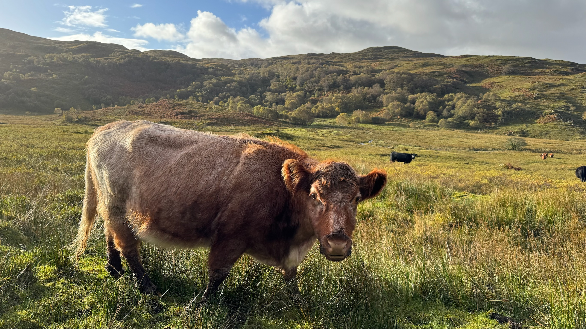
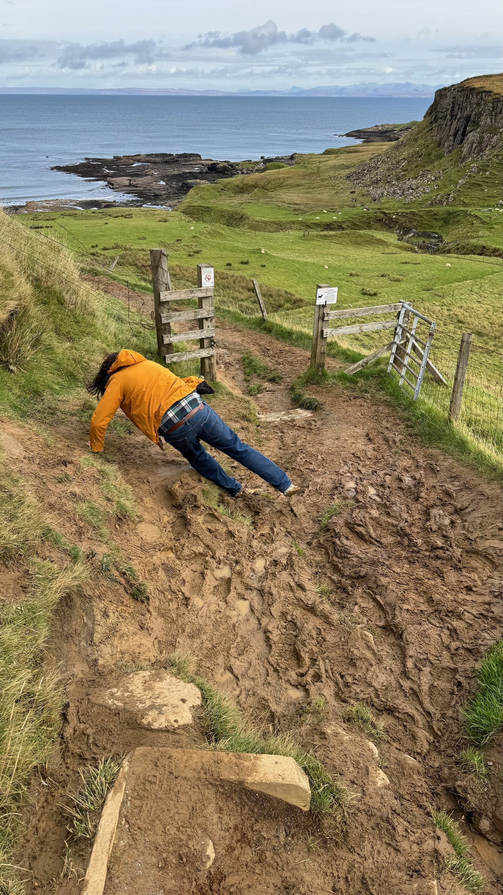

Travel and Logistics
Getting to Skye
By car
You can drive to Skye via the A87 Skye Bridge at Kyle of Lochalsh, or take the CalMac car ferry from Mallaig to Armadale. Given the long distances, we encourage attendees to carpool. Skye has numerous narrow single-track roads and winding country lanes; allow extra time for slow-moving traffic, especially in busy periods.
Do also beware of livestock on the roads:

By public transport
Skye has no rail line. One option from the mainland is the ScotRail train to Mallaig followed by the CalMac ferry to Armadale. Another is to travel by train to Kyle of Lochalsh and continue across the Skye Bridge by bus. Scottish Citylink coaches also serve Skye. Check current rail, coach and ferry options before booking, and leave enough time to make connections.
Getting to Skye is only part of the journey: Sabhal Mòr Ostaig is in Sleat, in the south of the island. From your arrival point, check whether a local bus reaches the campus at a suitable time using the Stagecoach journey planner. Local connections may be limited and may not line up with trains, coaches or ferries, so plan the final leg and return journey in advance; consider arranging a taxi or sharing a car if needed.
Use the ScotRail journey planner for train routes and times, Scottish Citylink for coach services, the CalMac website for the Mallaig–Armadale ferry and service updates, and the Stagecoach timetable planner for local buses. Timetables for May 2027 may not yet be available and services can change; recheck all legs, connection times and ferry status nearer the conference.
By air
Skye has no scheduled commercial airport. The nearest airports are in Inverness, Glasgow and Edinburgh. From there, continue by rental car or public transport, checking the full journey to Sleat rather than only the connection to Skye.
What to bring
In the summer months be wary of midges (small flying insects that bite) and Ticks. Insect repellant is helpful for dealing with both (smidge is a popular brand with locals). You may also wish to invest in a tick card and/or wearable midge net.
Be aware that wet and cold weather is likely, bring waterproof warm clothing and sturdy, sensible footwear.
